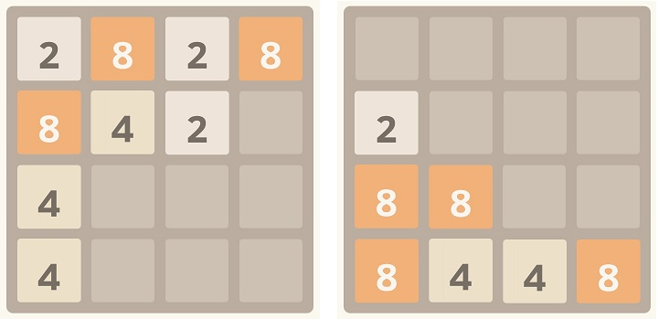

Trò chơi 2048 là một bảng gồm 4 dòng và 4 cột như hình bên dưới. Tại mỗi ô có thể có một tấm thẻ chứa một con số nguyên dương nào đó. Khi người chơi quẹt xuống các tấm thẻ sẽ rơi xuống dưới và hai thẻ giống nhau sẽ nhập lại thành một thẻ có giá trị gấp đôi.

Cho một bảng trò chơi 2048 tổng quát hình vuông kích thước n x n, bạn hãy tính giá trị các thẻ sau khi quẹt xuống.
Dữ liệu nhập: gồm hai dòng
- Dòng thứ nhất là số nguyên n (2 ≤ n ≤ 10) là kích thước bảng trò chơi.
- Trong n dòng tiếp theo là ma trận các phần tử aij thể hiện tình trạng bảng trò chơi. Mỗi dòng gồm n số nguyên mỗi số cách nhau một khoảng trắng (0 ≤ aij ≤ 2048, nếu aij = 0 nghĩa là ô dòng i cột j không có thẻ)
Dữ liệu xuất:
- Là ma trận gồm n dòng thể hiện tình trạng bảng trò chơi sau khi quẹt xuống. Mỗi dòng gồm n số nguyên mỗi số cách nhau một khoảng trắng. Ô không có thẻ có giá trị là 0.
Lưu ý:
- Không sáp nhập nhiều hơn 2 thẻ cùng lúc.
- 2 thẻ giống nhau cách xa nhau, nhưng khi rớt xuống nếu nằm sát nhau trên cùng cột cũng sáp nhập.